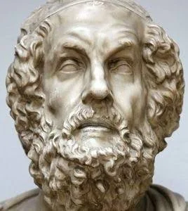

Homer (8th century BC)

Homer was an ancient Greek poet who probably lived during the eighth or seventh century BCE. He is traditionally known as the author of the Iliad and the Odyssey, two of the most important epic poems in ancient Greek literature. Although Homer is one of the most famous figures of ancient Greece, very little is known about his actual life, and scholars still debate whether he was a real individual or whether the poems were created by more than one poet. According to ancient traditions, Homer was a blind storyteller from Ionia, a region on the western coast of modern-day Turkey. However, these stories cannot be confirmed, and his exact birthplace and identity remain uncertain.
The Iliad tells the story of a conflict between the Greek king Agamemnon and the warrior Achilles during the final year of the Trojan War. The Odyssey follows Odysseus, the king of Ithaca, as he struggles to return home after the war, facing dangerous creatures, unexpected challenges, and the anger of the gods along the way. Both poems explore important themes such as bravery, honor, loyalty, pride, and the relationship between humans and the gods. They were originally passed down through oral storytelling, which helped preserve them before they were written down. Homer's works played a major role in ancient Greek education and culture, influencing how people understood heroism, morality, and their own history. Their impact continued long after antiquity, inspiring writers, artists, musicians, and filmmakers throughout the centuries.
Famous Plays:
- The Iliad - Ἰλιάς / Ιλιάδα
- The Odyssey - Ὀδύσσεια [Odýsseia]